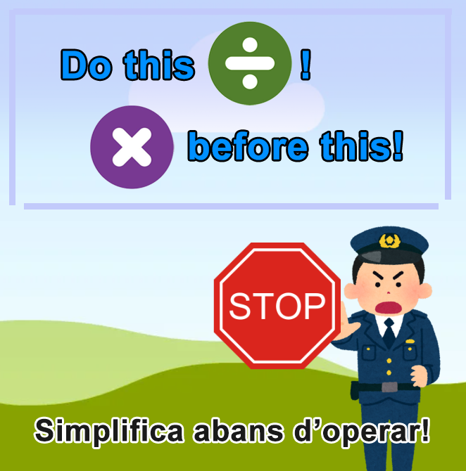
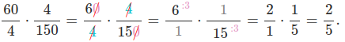

Simplifica pel camí
S'ha d'aprendre a caminar abans de córrer, i abans de fer un Baked Alaska (un dels pastissos més complicats), convé aprendre a fer un pa de pessic normalet. Això és cert. Però després, podem polir una mica la tècnica, no?

Les propietats de les fraccions ens permeten fer algunes de les simplificacions abans d'arribar a fer l'operació de multiplicació. El mètode és el mateix que si multipliquem primer i simplifiquem després.
Es poden tatxar zeros o dividir dalt i avall pel mateix nombre, fins i tot si pertanyen a fraccions distintes!
Per exemple:

- Això ens estalvia molta feina, perquè quan simplifiquem els nombres són més petits, i per tant les multiplicacions també són més senzilles.
- Si multipliquem primer, les fraccions queden amb nombres molt més grans, i tardem més en realitzar les divisions.
Si tenim un nombre molt gran, el procediment és encara més clar, ho veurem amb un exemple:
| Exemple | \( \frac {40} {21} \cdot \frac {9}{28}= \) |
| 1. Factoritzar cada nombre (podeu fer-ho sense posar exponents) | \( =\frac {2 \cdot 2 \cdot 2 \cdot 5} {3 \cdot 7} \cdot \frac {3 \cdot 3}{2 \cdot 2 \cdot 7}= \) |
| 2. Tatxar els nombres comuns a numerador i denominador | \( =\frac {\cancel 2 \cdot \cancel 2 \cdot 2 \cdot 5} {\bcancel 3 7} \cdot \frac {\bcancel 3 \cdot 3}{\cancel 2 \cdot \cancel 2 \cdot 7}= \) |
| 3. Operar els restants | \( =\frac { 2 \cdot 5} { 7} \cdot \frac { 3}{ \cdot 7}= \boxed{\frac{6}{35}}\) |
Comprova-ho, realitzant el següent exercici:
https://www.geogebra.org/m/ZXudpEFw (Ventana nueva)
- Si no tens clara la solució, pots pitjar el botó "¡Mejor hago otro!" per passar a un altre exercici.
- Puntuació: cada apartat val 2 punts. Si no simplifiques totalment el resultat (fracció irreductible), únicament aconseguiràs 1 punt. Les errades no penalitzen. Pots repetir els exercicis tantes vegades com vulguis, o si veus nombres molt complicats provar amb un altre. Es conserva la nota més alta.